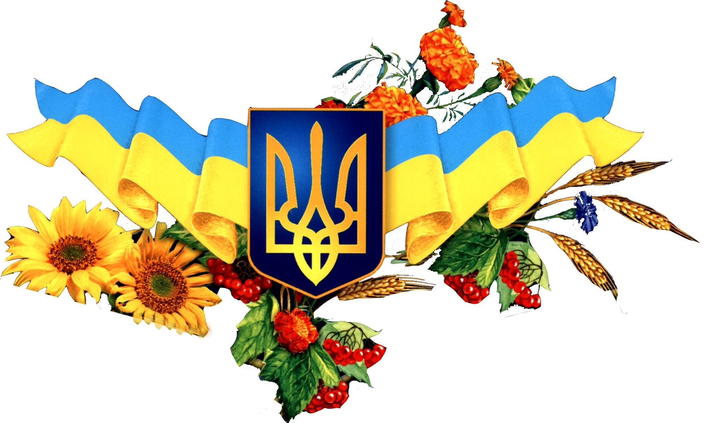
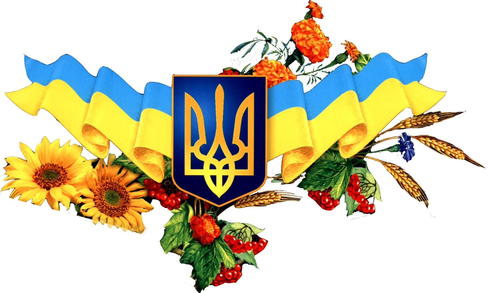

Синьожовтий стяг
У середу, 23 серпня, в Україні відзначають День Державного Прапора. Як передає Укрінформ, свято встановлене «на вшанування багатовікової історії українського державотворення, державної символіки незалежної України та з метою виховання поваги громадян до державних символів України» згідно з указом Президента від 23 серпня 2004 року. У 2009 році було внесено зміни до цього указу й засновано щорічну офіційну церемонію підняття прапора 23 серпня по всій Україні.
Синьо-жовті кольори на прапорі мають щонайменше тисячолітню історію і сягають часів Київської Русі та Галицько-Волинського князівства. Під час хвилі європейських революцій 1848 року, названої «Весна народів», синьо-жовтий стяг утвердився вже як прапор українського народу. Тоді, у червні 1848-го, таке знамено вперше підняли над ратушею у Львові. Утвердження ж синьо-жовтого прапора як державного відбулося із проголошенням Української Народної Республіки (УНР). Потім в історії України був період червоного «серпасто-молоткастого», а за синьо-жовтий саджали до в’язниць.
 


23 серпня 1991 року група народних депутатів внесла синьо-жовтий український прапор у сесійну залу Верховної Ради, а вже 4 вересня його урочисто підняли над будівлею парламенту. Після початку російської агресії синьо-жовтий прапор став символом боротьби та спротиву загарбникам. Сьогоднішнє свято Україна відзначить без масових заходів через загрозу нових ударів РФ по українських містах. Їх скасували в Києві та багатьох інших областях.